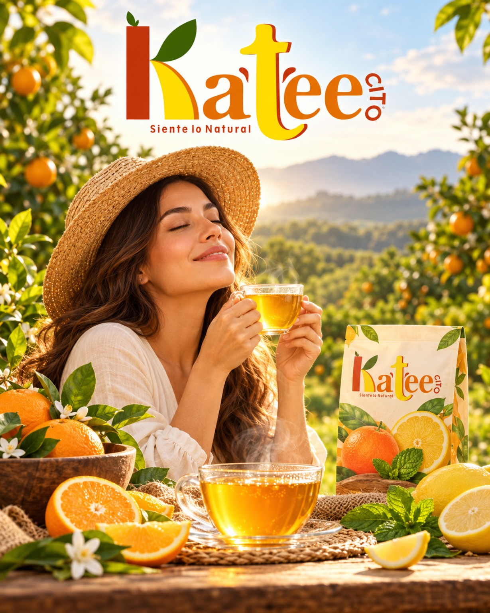
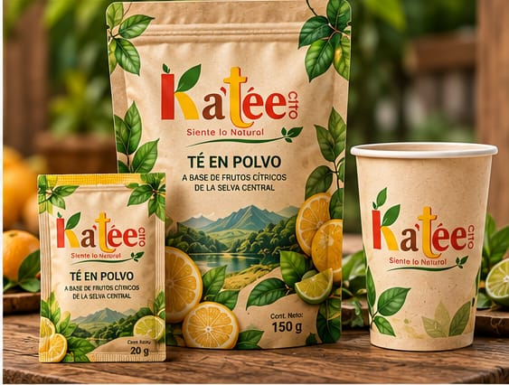
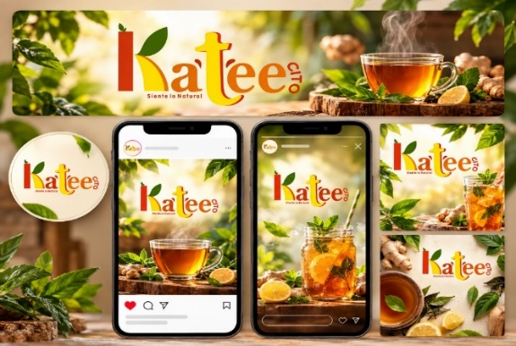
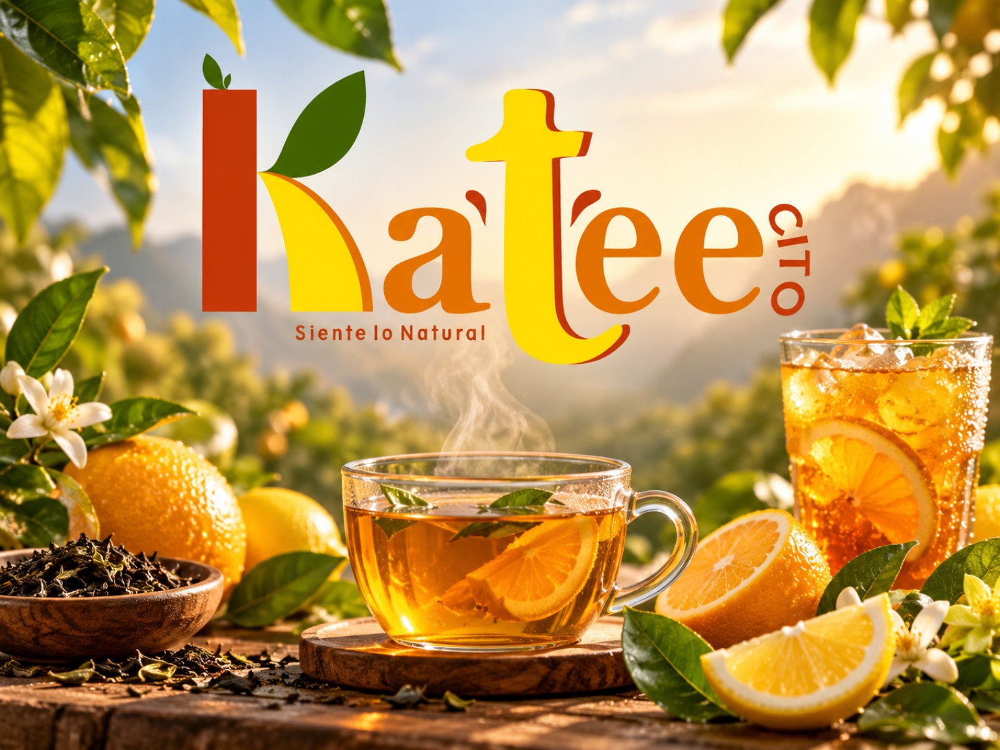
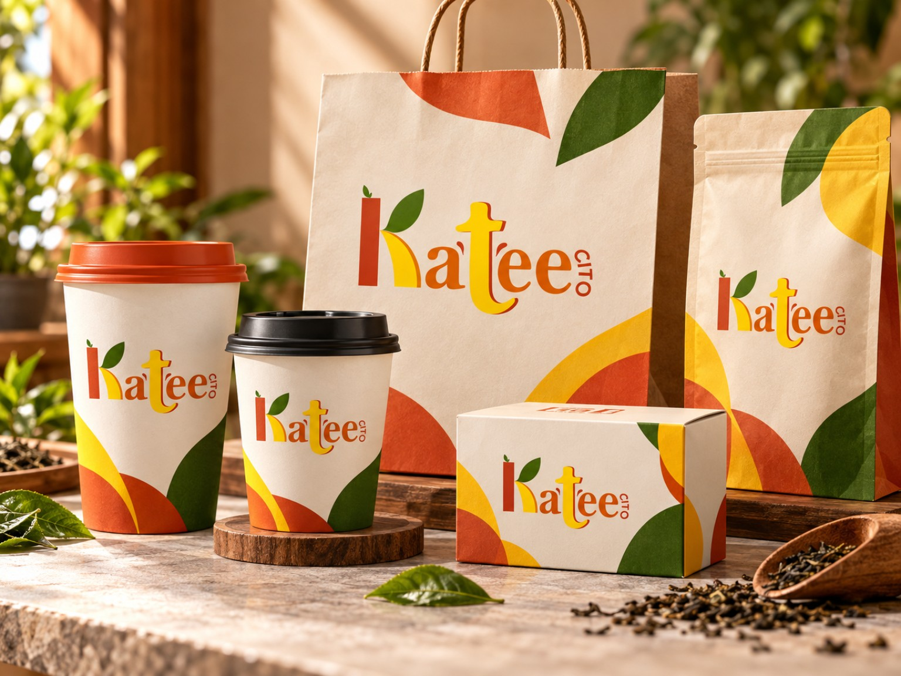
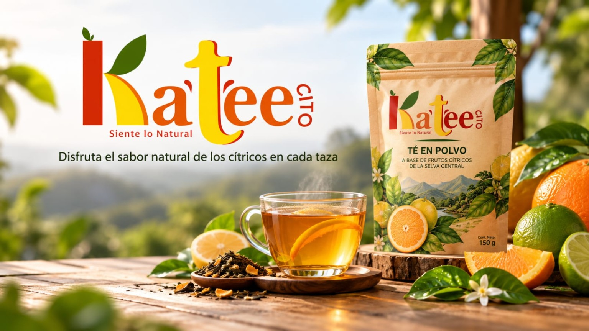
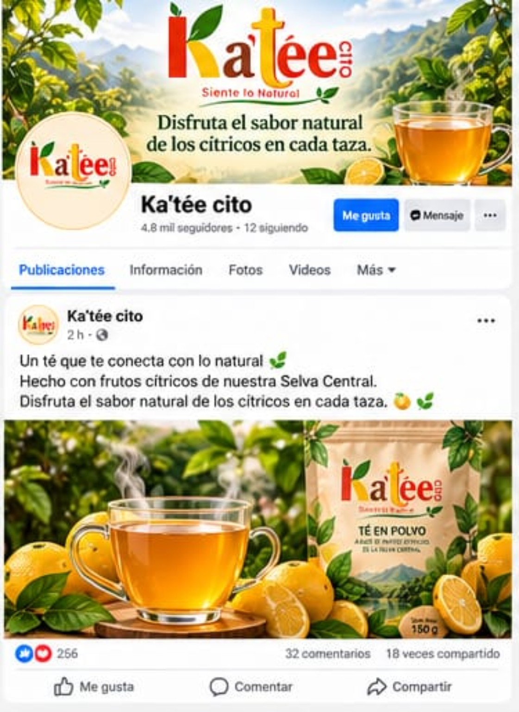
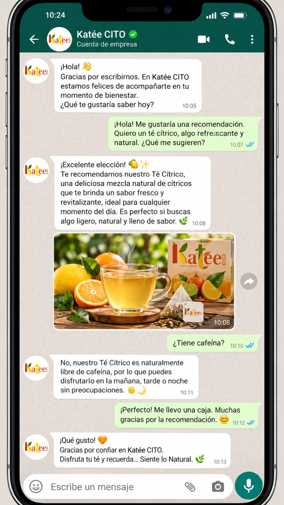
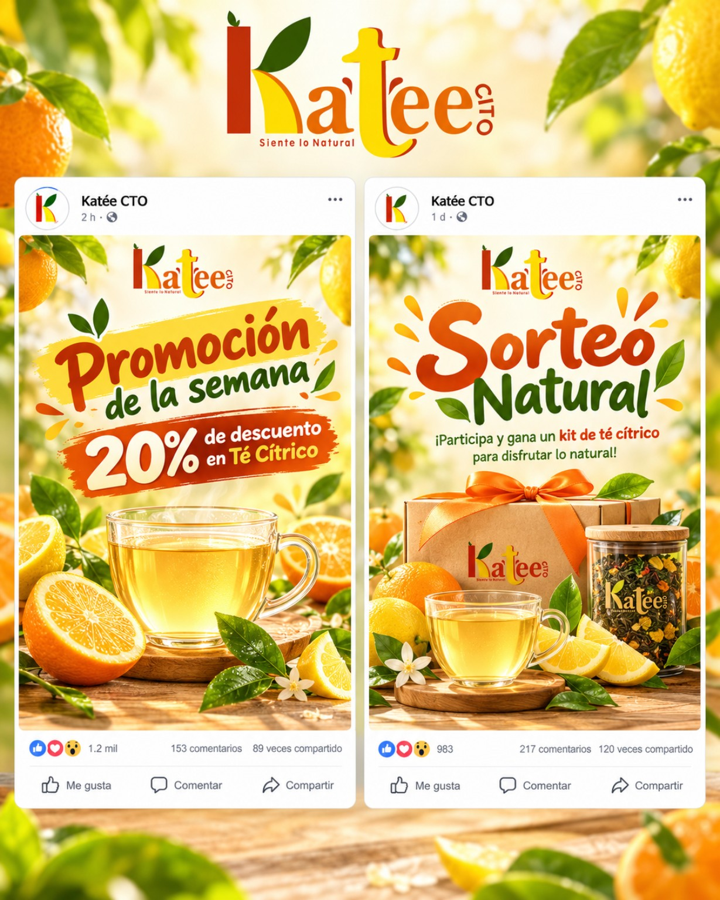

Una marca que comunica su esencia
Desde Pichanaki, en la Selva Central, Ka'tée Cito proyecta el sabor natural de los cítricos a través de una identidad cercana, responsable y reconocible. Este documento organiza la estrategia de comunicación en quince apartados.

Una marca que se vive y se comparte
Nuestra esencia en imágenes



Plan de comunicación corporativa
Toca cada título para desplegar su contenido. Las acciones y cifras planteadas son propuestas para evaluación.

Nombre del proyecto: Plan de Comunicación Corporativa de Ka’tée Cito. Dirigido a colaboradores, clientes, comunidad local y aliados comerciales.
Ka’tée Cito es una marca vinculada al sabor natural de los cítricos de la Selva Central. Su comunicación corporativa debe transmitir una identidad fresca, cercana y responsable, conectando lo que la empresa expresa con la experiencia que ofrece.
Este plan propone ordenar los mensajes, fortalecer la coordinación interna y construir una relación de confianza con los públicos externos mediante acciones realizables y evaluables.
Situación interna
Se plantea formalizar la circulación de información, las responsabilidades y las pautas de atención para mantener una experiencia coherente entre los integrantes del equipo.
Situación externa
La marca contempla canales como Facebook, Instagram, TikTok, WhatsApp y materiales impresos. Conviene unificar los mensajes, definir frecuencia y evaluar su alcance.
Fortalezas
- Identidad visual definida y reconocible.
- Origen regional y propuesta natural diferenciada.
- Personalidad cercana y amigable.
Oportunidades
- Interés en productos con identidad local.
- Contenido audiovisual y redes sociales.
- Alianzas con emprendimientos de la zona.
Debilidades por evaluar
- Necesidad de pautas comunicacionales unificadas.
- Posible falta de seguimiento de indicadores.
- Recursos limitados para difusión sostenida.
Amenazas
- Competidores con mayor visibilidad.
- Comentarios negativos sin respuesta oportuna.
- Cambios en tendencias y algoritmos digitales.

Internos
Propietarios, administración, colaboradores y personal vinculado a la atención, preparación y distribución.
Externos
Clientes actuales y potenciales, consumidores de infusiones, proveedores, aliados comerciales y comunidad de Pichanaki y la Selva Central.
Los documentos de marca consideran un público amplio, aproximadamente de 5 a 50 años. Para campañas concretas conviene segmentar por hábitos de consumo y canal.
Objetivo general: fortalecer la identidad y reputación de Ka’tée Cito mediante una comunicación coherente, cercana y medible.
- Unificar el mensaje y los elementos visuales en medios físicos y digitales.
- Mejorar la coordinación y la calidad de la atención al cliente.
- Incrementar el reconocimiento de la marca en su mercado objetivo.
- Recoger opiniones y utilizar los resultados para mejorar.

La comunicación debe ser fresca, natural, cercana, profesional y respetuosa. Los valores que orientan el discurso son calidad, responsabilidad, respeto y compromiso.
Se utiliza el lema “Siente lo Natural”, presente en la página aprobada. La documentación también menciona “Activa tus Sentidos”; se recomienda definir oficialmente un único lema para todas las aplicaciones.
| Canal | Uso principal | Público |
|---|---|---|
| Facebook e Instagram | Novedades, identidad y fotografías | Clientes y comunidad |
| TikTok | Videos cortos y demostraciones | Público digital |
| Consultas y atención directa | Clientes y aliados | |
| Sitio web | Información institucional consistente | Todos los públicos |
| Afiches y material físico | Visibilidad en puntos de contacto | Comunidad local |
| Reuniones y mensajería interna | Coordinación y retroalimentación | Equipo de trabajo |

| Acción propuesta | Canal | Frecuencia | Responsable sugerido |
|---|---|---|---|
| Calendario de contenidos | Redes sociales | Semanal | Comunicación |
| Publicar historias del producto y origen | Redes y web | 2 veces por semana | Comunicación |
| Responder consultas y comentarios | WhatsApp y redes | Diaria | Atención al cliente |
| Revisar mensajes y pautas internas | Reunión de equipo | Quincenal | Administración |
| Encuesta breve de satisfacción | QR o formulario | Mensual | Atención al cliente |
| Evaluar resultados y ajustar | Reporte interno | Mensual | Administración |
| Actividad | Mes 1 | Mes 2 | Mes 3 |
|---|---|---|---|
| Diagnóstico inicial y definición de línea base | ✓ | — | — |
| Organización de canales, plantillas y respuestas frecuentes | ✓ | Revisión | Ajuste |
| Publicaciones de producto y preparación | ✓ | ✓ | ✓ |
| Contenido sobre origen de cítricos y marca | ✓ | ✓ | ✓ |
| Promociones aprobadas y difusión comercial | ✓ | ✓ | ✓ |
| Atención y seguimiento de consultas | ✓ | ✓ | ✓ |
| Medición mensual de indicadores | ✓ | ✓ | ✓ |
| Evaluación final y propuesta de continuidad | — | — | ✓ |
| Concepto / actividad | Costo estimado |
|---|---|
| Diseño y adaptación de plantillas para redes y afiches | S/ 180.00 |
| Publicidad digital segmentada (3 meses) | S/ 300.00 |
| Fotografía y producción básica de videos de producto | S/ 180.00 |
| Impresión de afiches y material promocional | S/ 200.00 |
| Materiales de apoyo y contingencia | S/ 100.00 |
| Total referencial | S/ 960.00 |
Montos referenciales propuestos, sujetos a aprobación y cotización.
| Indicador | Qué se mide | Meta propuesta | Verificación |
|---|---|---|---|
| Producto y preparación | Publicaciones sobre el producto y formas de preparación | Al menos 1 contenido semanal dentro del calendario de publicaciones | Revisión del calendario editorial y enlaces/capturas publicadas |
| Origen de los cítricos | Contenidos que comuniquen el origen regional y la propuesta de marca | Al menos 1 publicación semanal | Conteo mensual de publicaciones sobre cítricos y Selva Central |
| Promociones | Difusión de promociones aprobadas | Publicar cuando exista una campaña confirmada; registrar cada campaña | Registro de campaña, fecha, canal y pieza difundida |
| Atención de consultas | Porcentaje de consultas respondidas y tiempo de respuesta | Responder al menos el 90% de las consultas en un máximo objetivo de 30 minutos durante el horario de atención | Registro de mensajes recibidos y respondidos, con hora de recepción y respuesta |
| Resultado global | Interacción digital y consistencia de marca | Mejorar 15% mensual la interacción frente a la línea base y revisar el 100% de las piezas antes de publicar | Estadísticas de las plataformas y lista de verificación de identidad |

La retroalimentación conecta la evaluación con un nuevo diagnóstico, de modo que la comunicación no se limite a publicaciones aisladas, sino que se convierta en una práctica de mejora continua.
| Fase | Mecanismo de acción | Ejemplo práctico propuesto |
|---|---|---|
| 1. Diagnóstico continuo | Revisar mensajes, comentarios, preguntas y estadísticas disponibles. | Se observa que varias personas preguntan cómo preparar el té en polvo o qué presentación elegir. |
| 2. Ajuste estratégico | Crear una pieza clara con pasos de preparación y datos verificados del producto. | Se prepara una publicación con instrucciones reales del envase y las presentaciones disponibles. |
| 3. Ejecución focalizada | Difundir la pieza en Instagram, Facebook y TikTok; compartirla por WhatsApp cuando sea pertinente. | El equipo usa la misma información al responder en redes y consultas directas. |
| 4. Control y medición | Registrar alcance, guardados, consultas, tiempos de respuesta y ventas atribuibles si se identifican. | Se compara el desempeño con publicaciones similares sin asumir resultados de antemano. |
| 5. Aprendizaje organizacional | Documentar preguntas recurrentes y actualizar plantillas o respuestas frecuentes. | La explicación aprobada se incorpora al repertorio de respuestas para mantener consistencia. |

Durante la ejecución
- Registrar publicaciones y consultas.
- Revisar métricas cada mes.
- Recoger comentarios del equipo y clientes.
Al cierre del trimestre
- Comparar resultados con metas y línea base.
- Identificar acciones útiles y dificultades.
- Documentar acuerdos y responsables del siguiente ciclo.
Entregable sugerido: un informe trimestral con resultados, evidencias, aprendizajes y recomendaciones de mejora.
Comunicar también es escuchar.
La coherencia entre identidad, atención y mensajes construye confianza. El seguimiento trimestral permitirá aprender y mejorar.